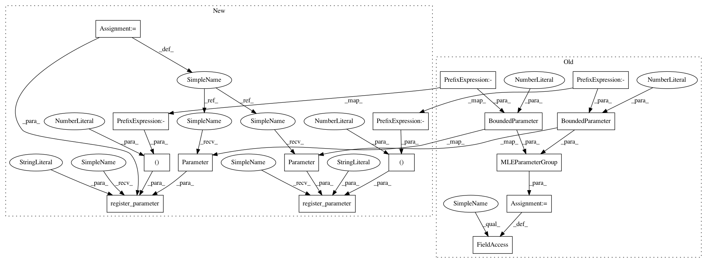

fef0836b77dabd9a1816db90d0bb98ea2dd64ea0,test/examples/multitask_gp_regression_test.py,MultitaskGPModel,__init__,#MultitaskGPModel#,28
Before Change
self.mean_module = ConstantMean()
self.covar_module = RBFKernel()
self.task_covar_module = IndexKernel()
self.model_params = MLEParameterGroup(
constant_mean=BoundedParameter(torch.randn(1), -1, 1),
log_noise=BoundedParameter(torch.randn(1), -6, 6),
log_lengthscale=BoundedParameter(torch.randn(1), -6, 6),
task_matrix=BoundedParameter(torch.randn(2, 1), -6, 6),
task_log_vars=BoundedParameter(torch.randn(2), -6, 6),
)
def forward(self, x, i):
mean_x = self.mean_module(x, constant=self.model_params.constant_mean)
After Change
self.mean_module = ConstantMean()
self.covar_module = RBFKernel()
self.task_covar_module = IndexKernel()
self.register_parameter("constant_mean", nn.Parameter(torch.randn(1)), bounds=(-1, 1))
self.register_parameter("log_noise", nn.Parameter(torch.randn(1)), bounds=(-6, 6))
self.register_parameter("log_lengthscale", nn.Parameter(torch.randn(1)), bounds=(-6, 6))
self.register_parameter("task_matrix", nn.Parameter(torch.randn(2, 1)), bounds=(-6, 6))
self.register_parameter("task_log_vars", nn.Parameter(torch.randn(2)), bounds=(-6, 6))
def forward(self, x, i):
mean_x = self.mean_module(x, constant=self.constant_mean)
In pattern: SUPERPATTERN
Frequency: 3
Non-data size: 16
Instances
Project Name: cornellius-gp/gpytorch
Commit Name: fef0836b77dabd9a1816db90d0bb98ea2dd64ea0
Time: 2017-08-11
Author: gpleiss@gmail.com
File Name: test/examples/multitask_gp_regression_test.py
Class Name: MultitaskGPModel
Method Name: __init__
Project Name: cornellius-gp/gpytorch
Commit Name: fef0836b77dabd9a1816db90d0bb98ea2dd64ea0
Time: 2017-08-11
Author: gpleiss@gmail.com
File Name: test/examples/multitask_gp_regression_test.py
Class Name: MultitaskGPModel
Method Name: __init__
Project Name: cornellius-gp/gpytorch
Commit Name: fef0836b77dabd9a1816db90d0bb98ea2dd64ea0
Time: 2017-08-11
Author: gpleiss@gmail.com
File Name: test/examples/simple_gp_regression_test.py
Class Name: ExactGPModel
Method Name: __init__
Project Name: cornellius-gp/gpytorch
Commit Name: fef0836b77dabd9a1816db90d0bb98ea2dd64ea0
Time: 2017-08-11
Author: gpleiss@gmail.com
File Name: gpytorch/inference/posterior_models/variational_gp_posterior.py
Class Name: _VariationalGPPosterior
Method Name: __init__